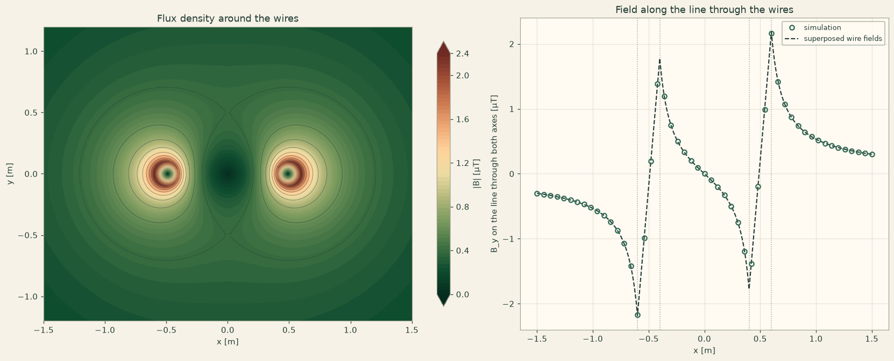
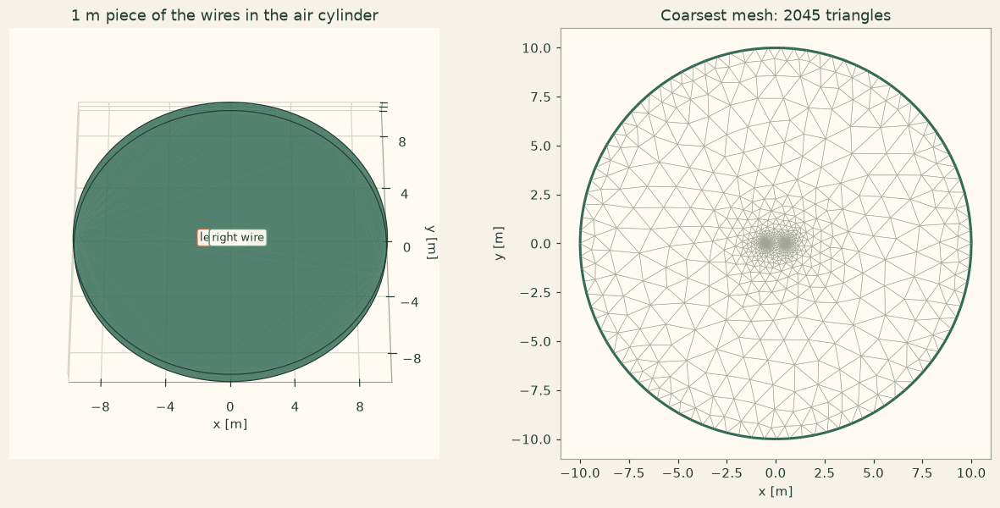

Docs › Examples › Force between two parallel current-carrying wires
Magnetostatics · 2D
Force between two parallel current-carrying wires
Two long wires 1 m apart carrying 1 A each attract with the force that once defined the ampere.
Run locally with OneSimulation. The example downloads are free. Running them requires an activated runtime. Runtime Alpha 0.2.1a7 · CPython 3.13 on macOS (Apple Silicon), Ubuntu 22.04 (x86-64), and Windows x64. Installation and activation · View pilot plans. Scope of the reference checks.


What it computes
OneSimulation cuts the cross-section from STEP parts and solves the planar magnetostatic equation for A_z with quadratic elements, the currents spread uniformly over the wire sections; magnetic_force integrates the Maxwell stress around each wire. Three meshes refine the wires from 6 to 24 cells per radius. The script that builds the STEP file comes with the notebook.
What it checks
The force on each wire is 1.9976e-7 N/m on the finest mesh against mu0 I^2/(2 pi d) = 2.0000e-7 N/m (-0.12 %, -0.10 % and -0.41 % on the coarser meshes); the forces on the two wires balance to 2e-6 of the force, and the field along the line through both axes follows the superposed wire fields.
Geometry
The notebook starts at the import of the CAD files parallel_wires_ampere_force_2d.step, parallel_wires_ampere_force_2d_left.step, parallel_wires_ampere_force_2d_right.step: STEP (AP242), readable by any CAD program, with the names of the faces that the boundary conditions use. Put them next to the notebook.


The geometry script
The script parallel_wires_ampere_force_2d_geometry.py builds the geometry with the CAD objects of OneSimulation and writes the files. Change a dimension there, run it, and run the notebook again.
"""Geometry of the OneSimulation example "Force between two parallel current-carrying wires".
Builds a 1 m long piece of two parallel straight wires (radius 0.1 m, axes 1 m apart) and the air
around them, a cylinder of 10 m radius about the midpoint between the wires, with the CAD objects
of OneSimulation. The air cylinder (the modelled domain, wires included) is written to
parallel_wires_ampere_force_2d.step; the wires go to parallel_wires_ampere_force_2d_left.step and
parallel_wires_ampere_force_2d_right.step. The example computes on the cross-section z = 0.5 m.
"""
from onesim.cad.d3 import Cylinder
spacing, radius, outer, length = 1.0, 0.1, 10.0, 1.0
Cylinder(radius=outer, length=length).save("parallel_wires_ampere_force_2d.step")
Cylinder(radius=radius, length=length, origin=(-spacing / 2, 0.0, 0.0)).save(
"parallel_wires_ampere_force_2d_left.step"
)
Cylinder(radius=radius, length=length, origin=(spacing / 2, 0.0, 0.0)).save(
"parallel_wires_ampere_force_2d_right.step"
)The notebook
The complete notebook, cell by cell. Run it to produce the figures and the comparison printout.
Two straight, very long round wires of radius \(a=0.1\) m have their axes \(d=1\) m apart and carry the same current \(I=1\) A in the same direction. Each wire sits in the magnetic field of the other and is pulled towards it. Until 2019 this force defined the ampere: \(2\cdot10^{-7}\) N per metre of wire for 1 A at 1 m.
The wires are long, so the field is the same in every cross-section and the vector potential has only the component \(A_z(x,y)\). OneSimulation solves the planar magnetostatic equation
with quadratic Lagrange elements, a uniform current density in each wire and magnetic insulation (\(A_z=0\)) on a circle of 10 m radius. The force per metre on a wire is the Maxwell stress integrated around it (magnetic_force).
The domain is the cross-section at half length of parallel_wires_ampere_force_2d.step, a 1 m piece of an air cylinder of 10 m radius; the wires are the sections of parallel_wires_ampere_force_2d_left.step and _right.step. The script parallel_wires_ampere_force_2d_geometry.py builds them with the CAD objects of OneSimulation.
Reference. Ampère's force law for two long parallel currents (Jackson, Classical Electrodynamics, 3rd ed., Sec. 5.2; the SI definition of the ampere before 2019):
It holds for round wires of any radius. The insulated circle acts like two image currents \(-I\) at \(x=\pm2R^2/d\); they change the force by the factor \(1+d/(2R^2/d-d/2)-d/(2R^2/d+d/2)\), here \(1+2.5\cdot10^{-5}\), which is included.
import numpy as np
from onesim.cad.d2 import Plane
from onesim.cad.exchange import load
from onesim.materials import VacuumPermeability
from onesim.meshing import TriangularMesher
from onesim.numerics import Numerics
from onesim.numerics.fem import FiniteElement, Lagrange
from onesim.numerics.linear import SparseDirect
from onesim.physics.magnetostatics import (
MagneticInsulation,
Magnetostatics,
RegionCurrent,
magnetic_force,
)
from onesim.simulation import Problem, Simulation
from onesim.visualization import plots, theme
theme.set()Geometry and mesh
section cuts the three parts at half length. The current density is assigned at the quadrature points inside the wire sections, so the triangles are small near the wire surfaces and grow towards the outer circle. Splitting every triangle into four once and twice gives the finer meshes, with 6, 12 and 24 cells per wire radius.
mid = lambda name: load(f"parallel_wires_ampere_force_2d{name}.step").section(
(0, 0, 1), origin=(0, 0, 0.5)
)
air, left, right = mid(""), mid("_left"), mid("_right")
radius, outer = right.size[0] / 2, air.size[0] / 2
spacing = right.bounding_box[0][0] - left.bounding_box[0][0]
cells = (6, 12, 24)
distance = lambda points: np.minimum(
np.hypot(points[:, 0] + spacing / 2, points[:, 1]),
np.hypot(points[:, 0] - spacing / 2, points[:, 1]),
)
meshes = [
TriangularMesher(
target_size=outer / 6,
refinements=level,
size_field=lambda points: np.clip(
radius / 6 + 0.25 * np.abs(distance(points) - radius), radius / 6, outer / 6
),
).generate(air)
for level in range(3)
]
fig = plots.figure(1, 2, size=(14, 6))
plots.geometry(
[
load("parallel_wires_ampere_force_2d.step").named("air"),
load("parallel_wires_ampere_force_2d_left.step").named("left wire"),
load("parallel_wires_ampere_force_2d_right.step").named("right wire"),
],
camera=plots.Camera(elevation=60, azimuth=-90),
title="1 m piece of the wires in the air cylinder",
ax=fig[0],
)
plots.mesh(
meshes[0],
groups=("all",),
legend=False,
title=f"Coarsest mesh: {meshes[0].cell_count} triangles",
ax=fig[1],
)
plots.show()Model
Both wires carry 1 A in \(+z\) as a uniform current density over their circular section.
current = 1.0
mu0 = float(VacuumPermeability().evaluate())
model = Magnetostatics(
domain=air.domain(),
permeability=VacuumPermeability(),
current_sources=tuple(
RegionCurrent.axial(wire, current, area=np.pi * radius**2, within=air.domain())
for wire in (left, right)
),
)
problem = Problem(
name="Parallel wires",
geometry=air,
physics=(model,),
boundary_conditions=(
MagneticInsulation(boundary=air.boundaries.all, physics=model),
),
)
numerics = Numerics(
spatial=FiniteElement(element=Lagrange(order=2), quadrature_order=4),
linear_solver=SparseDirect(),
)
results = [
Simulation(problem=problem, mesh=mesh, numerics=numerics).solve_stationary()
for mesh in meshes
]Results
The force per metre on each wire on the three meshes against Ampère's law.
ampere = mu0 * current**2 / (2 * np.pi * spacing)
image = 2 * outer**2 / spacing
exact = ampere * (1 + spacing / (image - spacing / 2) - spacing / (image + spacing / 2))
forces = [
(
magnetic_force(result, model, right).force,
magnetic_force(result, model, left).force,
)
for result in results
]
print(
f"Ampère's law: {1e7 * ampere:.6f}e-7 N/m (with the images of the insulated circle {1e7 * exact:.6f}e-7 N/m)"
)
print(
"cells per radius triangles force on the right wire [1e-7 N/m] deviation left + right [% of the force]"
)
for n, mesh, (on_right, on_left) in zip(cells, meshes, forces):
print(
f"{n:16d} {mesh.cell_count:11d} {1e7 * on_right[0]:22.6f} {100 * (-on_right[0] / exact - 1):+17.4f} % "
f"{100 * np.linalg.norm(on_right + on_left) / exact:14.4f}"
)Figure
The flux density around the wires and along the line through both axes against the superposed fields of the two wires (linear inside each wire, \(1/r\) outside).
x = np.linspace(-1.5, 1.5, 601)
wire_field = lambda r: np.where(
np.abs(r) < radius, r / radius**2, np.sign(r) / np.maximum(np.abs(r), radius)
)
superposed = (
mu0
* current
/ (2 * np.pi)
* (wire_field(x + spacing / 2) + wire_field(x - spacing / 2))
)
marks = x[::12]
computed = (
results[-1]
.field(model.magnetic_flux_density)
.evaluate(np.column_stack((marks, np.zeros_like(marks))))[:, 1]
)
fig = plots.figure(1, 2, size=(15, 6))
plots.surface(
results[-1].field(model.magnetic_flux_density),
component=lambda B, position: 1e6 * np.linalg.norm(B, axis=1),
limits=(0, 2.2),
contours=12,
subdivisions=2,
label="|B| [µT]",
title="Flux density around the wires",
xlimits=(-1.5, 1.5),
ylimits=(-1.2, 1.2),
xlabel="x [m]",
ylabel="y [m]",
ax=fig[0],
)
plots.line(
points={"simulation": (marks, 1e6 * computed)},
reference={"superposed wire fields": (x, 1e6 * superposed)},
vlines=[
-spacing / 2 - radius,
-spacing / 2 + radius,
spacing / 2 - radius,
spacing / 2 + radius,
],
xlabel="x [m]",
ylabel="B_y on the line through both axes [µT]",
title="Field along the line through the wires",
ax=fig[1],
)
plots.show()Going further
Reverse one current and the wires repel with the same force; change the wire radius or the spacing in parallel_wires_ampere_force_2d_geometry.py and write the STEP files again: the force depends on the spacing only, as long as the wires are round and do not touch.